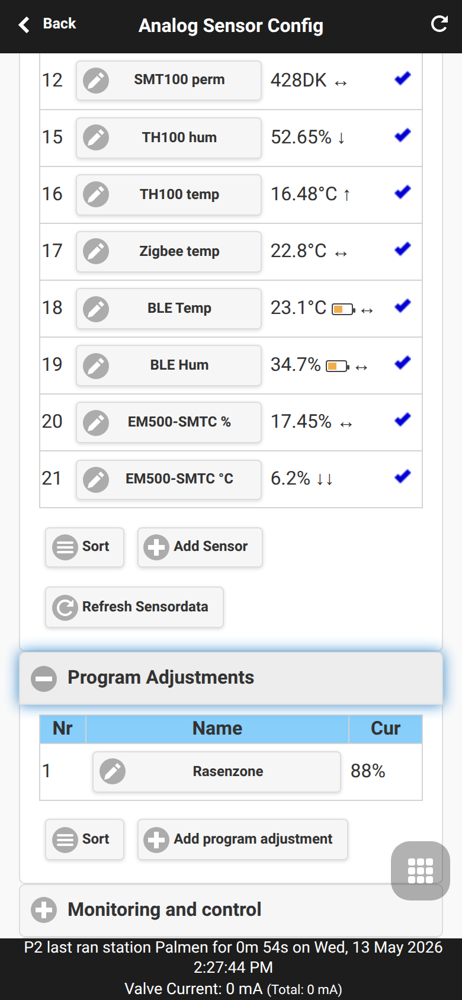
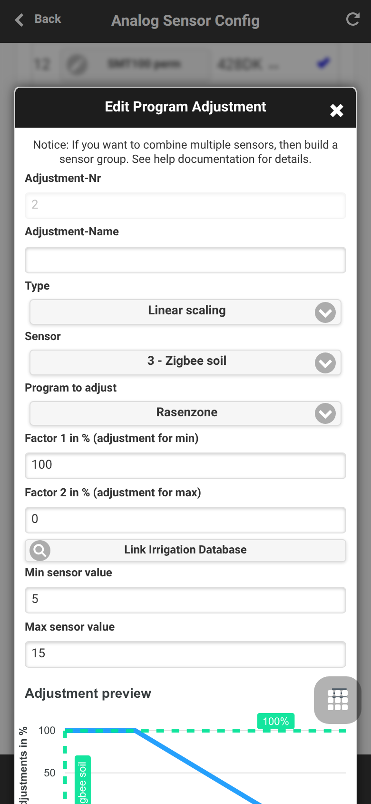
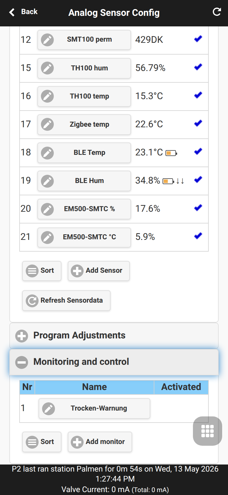
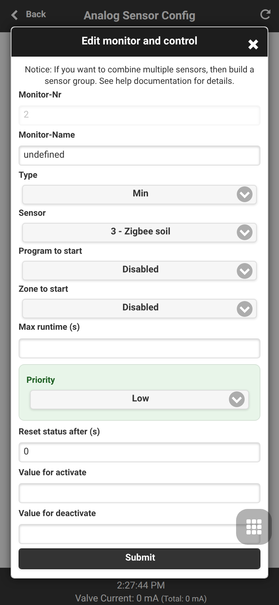

Sensor Automation and Monitors
OpenSprinklerPro combines sensors, program adjustments and monitors. The full UI workflow is documented in Analog Sensor Configuration; this page focuses on the automation model and MCP/API tools such as configure_adjustment and configure_monitor.
Sensor-based program adjustments
Program adjustments scale watering duration from live sensor values.
| Type | Behavior |
|---|---|
LINEAR |
Map sensor min/max linearly to factor 1/factor 2 |
DIGITAL_MIN |
Use factor 1 if the sensor is below/equal the minimum |
DIGITAL_MAX |
Use factor 2 if the sensor is above/equal the maximum |
DIGITAL_MINMAX |
Trigger outside the configured min/max window |


Monitors
Monitors watch sensor values or logical conditions and create local warnings or automation triggers. They can also feed notification events.
| Monitor type | Purpose |
|---|---|
| MIN / MAX | Threshold checks |
| SENSOR12 / SET_SENSOR12 | Digital rain/soil sensor integration |
| AND / OR / XOR / NOT | Logic based on other monitors |
| TIME | Time-window condition |
| REMOTE | Monitor state from another OpenSprinkler |

